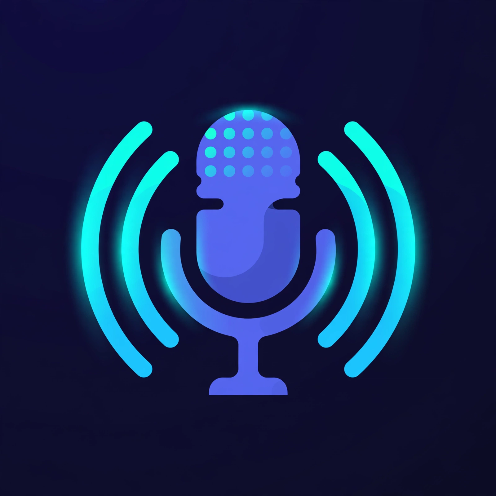
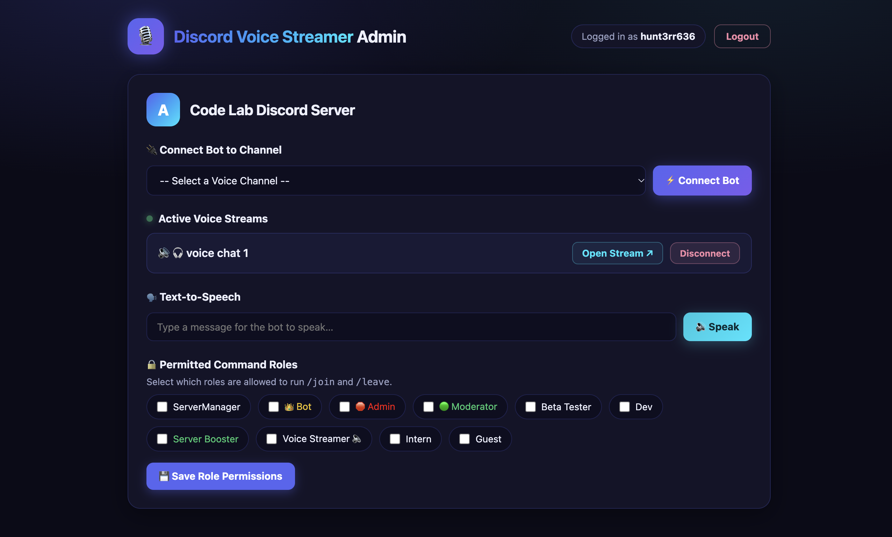
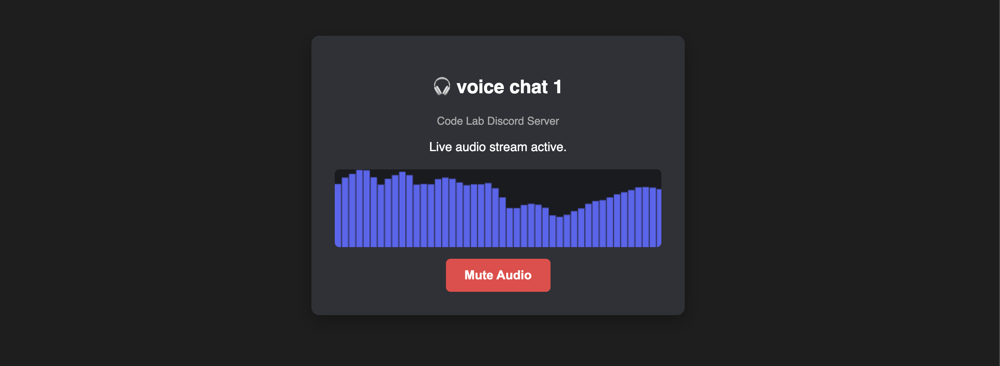

Discord Voice StreamerDiscord Voice Streamer is a free, open-source, self-hosted Discord bot. Invite it, run /join, and share a link — anyone can listen live, no Discord account needed. Talk back into the channel with text-to-speech.
Everything you need to take a Discord voice channel to the web.
The bot joins a voice channel and relays crystal-clear Opus audio to a web page in real time.
Type a message in the admin panel or with /tts and the bot speaks it into the voice channel.
Secure Discord OAuth login. Join or leave channels remotely and manage per-server roles.
/join, /leave, /tts and /help — control everything without leaving Discord.
One command to run. ffmpeg, Node.js and all dependencies ship inside the image.
Self-hosted on your own server. Stream links are unlisted; the admin panel is login-gated.
From zero to live audio in three steps.
Create a Discord application, grab the bot token, and invite it to your server with Connect + Speak permissions.
/joinJoin a voice channel and run /join. The bot replies with a unique live stream link.
Anyone with the link listens live in their browser — no Discord account required.
A look at the admin panel and the live listening page.


Docker is the recommended way. Node.js 22+ works too.
git clone https://github.com/nishadnyc/Discord-Voice-Channel-Streamer-Bot.git
cd Discord-Voice-Channel-Streamer-Bot
cp .env.example .env # fill in your Discord credentials
docker compose up --build -dFull guide in the README — including the Discord Developer Portal setup.
Quick answers to common questions.
No. The stream link opens a plain web page — anyone with the link can listen live. Only the admin panel requires a Discord login.
Yes — MIT licensed, free forever. You just need somewhere to run it (any VPS, home server, or even a Raspberry Pi with Docker).
Yes. Use /tts in Discord or the admin panel to make the bot speak any text into the voice channel.
The listening page works in any modern mobile browser. The admin panel is fully usable on phones too.